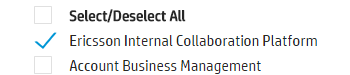

1. Specify document type
From the drop down menu choose the document type you want to look for - Active, Inactive, Non-Record, Unspecified or All documents.

From the drop down menu choose the document type you want to look for - Active, Inactive, Non-Record, Unspecified or All documents.
Select the subsites you wish to scan. Again, you can choose certain subsites or go throght all of them.

Start the scan by pressing  . On your bottom left you can a status box, where you can follow the progress.
. On your bottom left you can a status box, where you can follow the progress.

Once it's done, the total number of files collected will appear in the status box. Above it you can see the files numbers, separated in categories by document type.
The download button will be activated on you bottom right corner. By pressing it, you will get the collected data in an excell file. Note that the maximun size of the excel file is 25000 items. Be aware that depending on items number, the generating and downloading of the file might take up to several minutes.